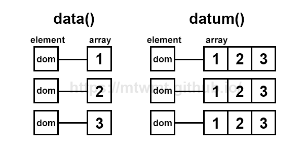
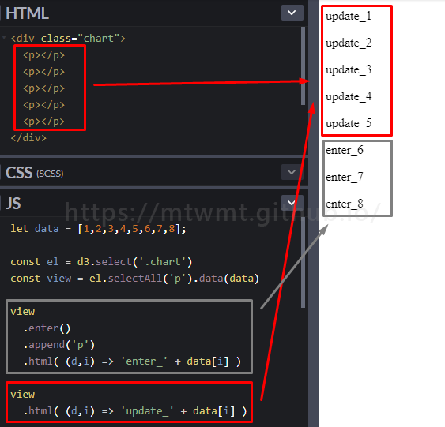
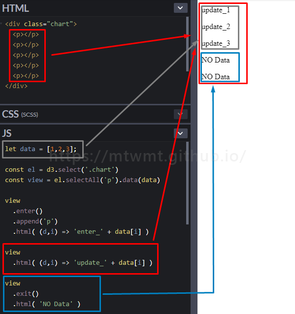
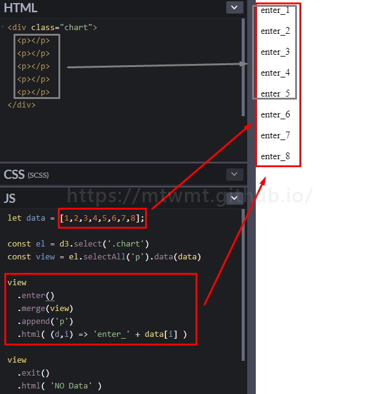

D3 資料綁定與更新
玩 d3 一定要了解的 d3 的資料綁定機制
不然要怎麼讓畫面跑出來呢 XDDD
data 與 datum 差別
當我有一組的資料 想讓圖表依續產生時 就會用到 data 或 datum 將資料傳入 以便後續圖表繪製動作
- data 綁定一組資料
- datum 綁定單一筆資料
先看圖會先較清楚些

準備一組資料
1 | const data = [1, 2, 3]; |
data 傳入資料
1 | el.selectAll('p').data(data); |
datum 傳入資料
1 | el.selectAll('p').datum(data); |
資料綁定機制後 再來就是資料繪製與更新的部份了
enter update exit
1 | // 選取 D3 繪製區域 |
update() - 只有 DOM 對應的資料
根據當下的已有的 DOM(元素) 做資料更新
enter() - 沒有 DOM 對應的資料
當 DOM(元素) 只有 5 個時
而進來的 data(資料)有 8 筆時
此時 enter 就會建立不足的 dom 讓資料綁定
如下圖：

exit() 移除 - 沒有資料對應的 DOM
資料更新完後 若 資料筆數少於現有的 DOM 數 則會移除綁定
如下圖：

寫法如下
1 | const el = d3.select('.chart'); |
更優雅的寫法
merge() 合併
D3 v4 後新增的功能
主要是同時處理 enter 與 update
目的是是在於圖型繪製的時後 可以少寫許多重覆圖形繪製的 code

可以看圖中 原本在 enter 時 只會塞入沒有元素對應的資料
但加上 merge 後 連原本需要 update 的資料也一起處理了
1 | view |
join()
join 是 D3 V5.8.0 版本的新方法
它整合了 enter update 跟 exit
讓我們減少了寫了很多重覆的 code
也更容易理解了
簡易寫法如下
1 | view.join('p').html((d, i) => 'join_' + data[i]); |
一行 join 同時處理了 enter 、update 與 exit
若是要各別處理每個進入點所要做的事
可以使用 function 方式處理
1 | view |
參考資料
https://github.com/d3/d3/releases/tag/v5.8.0
https://github.com/d3/d3-selection/blob/master/README.md#selection_join
D3.js has just got easier!
附上 codepen
試著玩玩 可以更了解 D3 資料綁定的機制